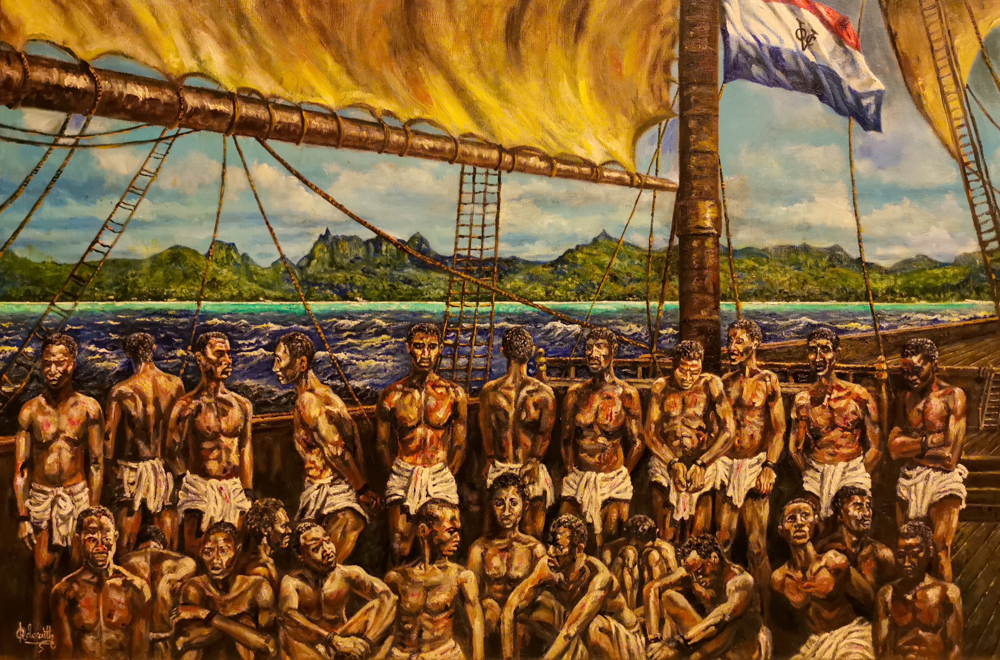

🇲🇾 ماليزيا — دليل شامل للمستشار السياحي
دليل عملي ومحدث عن ماليزيا: معلومات أساسية، برامج سياحية، معالم، مسافات، نصائح، وفيديوهات توضيحية.

ملخص مختصر
ماليزيا تقع في جنوب شرق آسيا، وتنقسم إلى شبه الجزيرة الماليزية وشرق ماليزيا (بورنيو). تجمع بين المدن الحديثة النابضة مثل كوالالمبور، والجزر الاستوائية الخلابة مثل لنكاوي، والمرتفعات الخضراء مثل كامرون، والتراث الثقافي الغني في بينانج ومالاكا. تتميز بأسعار معقولة، وطعام متنوع شهير عالمياً، وشعب متعدد الثقافات. وجهة مثالية للعائلات والأزواج ومحبي الطبيعة والتسوق.
معلومات أساسية سريعة
التأشيرة والدخول
- الدخول بدون تأشيرة للمواطنين الخليجيين لمدة تصل إلى 90 يوماً.
- يُنصح بحمل تذاكر العودة وتأكيد الفندق.
- جواز السفر يجب أن يكون ساري المفعول لمدة 6 أشهر على الأقل.
- للإقامات الطويلة أو العمل، يجب مراجعة السفارة الماليزية.
نقاط أساسية للمستشار
- الأمان: ماليزيا من الدول الآمنة سياحياً، مناسبة للعائلات والمسافرين الأفراد.
- التكلفة: أسعار معقولة — وجبة بمطعم محلي من 15–30 رينغيت، فندق 3 نجوم من 150–300 رينغيت/ليلة.
- الطقس: استوائي حار ورطب طوال العام، مع مواسم أمطار متفاوتة بين السواحل.
- المواصلات: مترو كوالالمبور ممتاز، قطارات بين المدن، ورحلات داخلية رخيصة.
- الطعام: المطبخ الماليزي من أشهر المطابخ عالمياً — ناسي ليماك، ساتيه، لاكسا.
- الإنترنت: تتوفر شرائح SIM رخيصة (Maxis، Celcom، Digi) مع باقات إنترنت ممتازة.
- الدين: أغلبية مسلمة (حوالي 60%)، مع مساجد ومطاعم حلال في كل مكان.
المدن والمعالم الرئيسية
🏙️ كوالالمبور (العاصمة)
🏝️ بينانج (لؤلؤة الشرق)
🏖️ لنكاوي (جزر الأحجار الكريمة)
🌿 مرتفعات كامرون والمدن التاريخية
أفكار برامج عملية
📋 جدول مقارنة البرامج
| النمط | المدة | النطاق | المناسب لـ |
|---|---|---|---|
| قصير | 3 أيام | كوالالمبور فقط | عطلة نهاية أسبوع |
| متوسط | 7 أيام | كوالالمبور • بينانج • لنكاوي | عائلات / أزواج |
| طويل | 10 أيام | كوالالمبور • بينانج • لنكاوي • كامرون • مالاكا | تجربة شاملة |
💡 نظرة سريعة
- كوالالمبور — مثالية للتسوق والمعالم الحديثة.
- بينانج — للتراث الثقافي والطعام الشهير.
- لنكاوي — للشواطئ والجزر والاسترخاء.
- كامرون — للمرتفعات الخضراء ومزارع الشاي.
- مالاكا — مدينة تاريخية من مواقع اليونسكو.
تفاصيل البرامج اليومية
برنامج قصير — كوالالمبور (3 أيام)
| اليوم | الفعاليات |
|---|---|
| 1 | الوصول إلى كوالالمبور، جولة في أبراج بتروناس، برج كوالالمبور. |
| 2 | كهوف باتو، مسجد النغارا، سوق بوكيت بينتانغ، حديقة الطيور. |
| 3 | أكواريا كوالالمبور، ميدان مرديكا، تسوق نهائي، ثم التوجه للمطار. |
برنامج متوسط — كوالالمبور + بينانج + لنكاوي (7 أيام)
| اليوم | الفعاليات |
|---|---|
| 1 | الوصول إلى كوالالمبور والاستراحة. |
| 2 | جولة في كوالالمبور: أبراج بتروناس، برج كوالالمبور، كهوف باتو. |
| 3 | الانتقال إلى بينانج — جولة في جورج تاون وفن الشارع. |
| 4 | تلفريك بينانج هيل، معبد كيك لوك سي، شاطئ باتو فيرينغي. |
| 5 | الانتقال إلى لنكاوي — جسر لنكاوي المعلق والتلفريك. |
| 6 | شاطئ بانتاي سينانغ، ميدان النسر، جولات المانغروف. |
| 7 | العودة إلى كوالالمبور، تسوق نهائي، ثم المغادرة. |
برنامج طويل — جولة شاملة (10 أيام)
| اليوم | الفعاليات |
|---|---|
| 1 | الوصول إلى كوالالمبور والاستراحة. |
| 2 | جولة كوالالمبور الكاملة: أبراج بتروناس، برج كوالالمبور، كهوف باتو. |
| 3 | مسجد النغارا، حديقة الطيور، أكواريا كوالالمبور، ميدان مرديكا. |
| 4 | الانتقال إلى مرتفعات كامرون — مزارع الشاي والفراولة. |
| 5 | الانتقال إلى بينانج — جولة في جورج تاون وفن الشارع. |
| 6 | تلفريك بينانج هيل، معبد كيك لوك سي، شاطئ باتو فيرينغي. |
| 7 | الانتقال إلى لنكاوي — جسر لنكاوي المعلق والتلفريك. |
| 8 | شاطئ بانتاي سينانغ، ميدان النسر، جولات المانغروف. |
| 9 | الانتقال إلى مالاكا — المدينة التاريخية وموقع اليونسكو. |
| 10 | العودة إلى كوالالمبور، تسوق نهائي، ثم المغادرة. |
المسافات بين المدن
| من | إلى | المدة | المسافة |
|---|---|---|---|
| كوالالمبور | مالاكا | 2 ساعة | 150 كم |
| كوالالمبور | مرتفعات كامرون | 3.5 ساعات | 200 كم |
| كوالالمبور | بينانج | 4 ساعات (سيارة) • 1 ساعة (طيران) | 350 كم |
| بينانج | لنكاوي | 1 ساعة (عبارة) • 30 دقيقة (طيران) | 100 كم بحري |
| كوالالمبور | لنكاوي | 1 ساعة (طيران) | 450 كم |
| كوالالمبور | جوهور باهرو | 3.5 ساعات | 330 كم |
| كوالالمبور | كهوف باتو | 30 دقيقة | 15 كم |
| كوالالمبور | سنغافورة | 4 ساعات (سيارة) • 1 ساعة (طيران) | 350 كم |
الطقس والمواسم
🌸 الربيع
مارس — مايو
حار ورطب — مناسب للسياحة العامة والمدن.
☀️ الصيف
يونيو — أغسطس
مثالي للساحل الشرقي والجزر. موسم الجفاف.
🍂 الخريف
سبتمبر — نوفمبر
موسم أمطار على الساحل الغربي — مناسب للساحل الشرقي.
❄️ الشتاء
ديسمبر — فبراير
أفضل وقت للساحل الغربي — جاف ومعتدل.
نصائح عملية
💰 المال والصرف
- العملة الرسمية: الرينغيت الماليزي (MYR).
- صرف تقريبي: 1 دولار ≈ 4.5 رينغيت (تحقق من السعر الحالي).
- تتوفر صرافات في كل مكان بأسعار جيدة.
- البطاقات (Visa/Mastercard) مقبولة في معظم الأماكن.
- احتفظ ببعض النقد للأسواق والمواصلات الصغيرة.
🍽️ الطعام والشراب
- ناسي ليماك: أرز بجوز الهند — الطبق الوطني.
- ساتيه: أسياخ مشوية بصلصة الفول السوداني.
- لاكسا: حساء نودلز حار.
- روتي جاناي: خبز مسطح مع الكاري.
- تتوفر مطاعم حلال معتمدة في كل مكان.
🚗 المواصلات
- مترو كوالالمبور: ممتاز ويغطي معظم المدينة.
- القطارات: تربط المدن الرئيسية (ETS).
- الرحلات الداخلية: رخيصة ومتوفرة بين المدن.
- العبارات: تربط بينانج ولنكاوي.
- تطبيقات: Grab متوفرة في جميع المدن.
📱 اتصال وإنترنت
- شرائح SIM: Maxis أو Celcom أو Digi — تغطية ممتازة.
- الأسعار: باقات إنترنت جيدة من 30–60 رينغيت.
- تتوفر شبكات Wi-Fi مجانية في معظم الفنادق والمقاهي.
- تطبيق Grab يستخدم للنقل والتوصيل.
- تطبيق Google Maps يعمل بكفاءة في ماليزيا.
أرقام مهمة
فيديوهات توضيحية
خريطة الوجهة

⚠️ ملاحظة: هذه الصفحة مرجع تعليمي عام — تحقق من المعلومات الرسمية (التأشيرة، أسعار الصرف، القيود، وأرقام الطوارئ) قبل أي عرض للعميل. الأسعار والمعلومات قابلة للتغير.